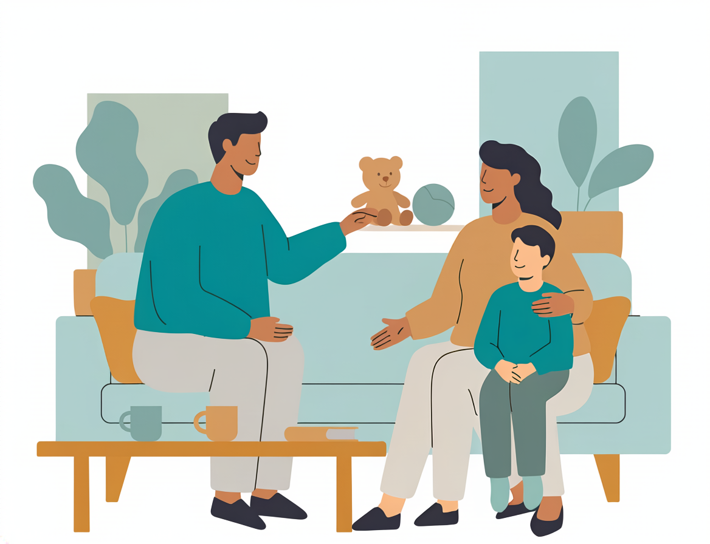

When your child is in crisis, your whole world narrows. We're here to hold that weight with you — a safe, nurturing place where young people can begin to feel steady again.

Our children's crisis stabilization program serves young people ages 5 through 17 who are experiencing a mental health crisis. It's a short-term residential stay — typically 3 to 5 days — in a warm, structured environment that feels nothing like a hospital. Think of it as a place to pause, to breathe, and to start feeling safe again.
Your child will work with licensed therapists and crisis intervention specialists who are trained specifically in working with young people. Every interaction is designed to be age-appropriate, gentle, and empowering. We meet kids where they are — whether that's talking, drawing, playing, or just sitting quietly together until they're ready.
This program is open to all Iowa families. You don't need insurance, you don't need a referral, and you don't need to have answers right now. You just need to reach out.
Every part of their day is designed to help them feel a little safer, a little more understood.
Daily access to a licensed therapist who specializes in working with children and teens — using talk, art, play, and whatever helps your child feel heard.
One-on-one time with a Crisis Intervention Specialist, building age-appropriate coping skills your child can understand and actually use.
We help young people discover what helps them feel calm and safe — breathing exercises, grounding techniques, creative outlets — tools they can carry home.
Age-appropriate daily groups covering goal setting, coping skills, meditation, grounding, and life skills — helping kids realize they're not the only ones going through this.
We know this is hard. Bringing your child to crisis stabilization can feel overwhelming, even scary. We want you to know: asking for help is one of the bravest, most loving things you can do for your child. You're not failing them. You're fighting for them.
During their stay, we ask that your child remain on-site so they can fully settle into the safety and rhythm of the program. They'll participate in daily sessions — both one-on-one and in small groups — and we'll meet them at their comfort level. Some kids open up quickly; others need time. Both are okay.
We'll keep you informed along the way and involve you in their care plan, because going home is part of the journey too. Your child's willingness to try — even a little — is the most important thing they bring with them.
The process is straightforward. Here's what to expect.
Call our 24/7 crisis line at 844-428-3878. You as a parent, a school counselor, a pediatrician, or an ER can make the call.
We'll talk through what's happening with your child and assess whether crisis stabilization is the best next step. This call is confidential.
We'll walk you and your child through the arrival process gently. Bring their comfort items, medications, and clothes. We handle everything else.
You know your child. If they need help, we're here — any hour, any day. No question is too small.
Call 844-428-3878